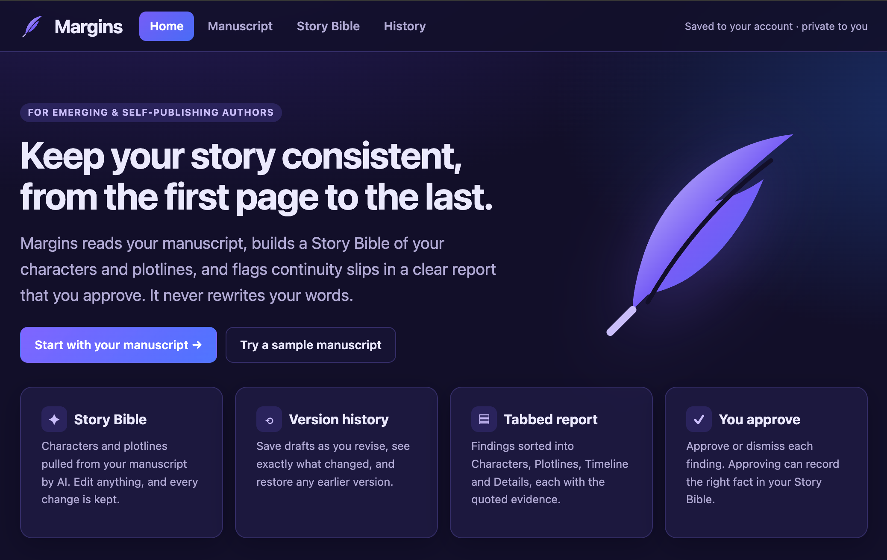
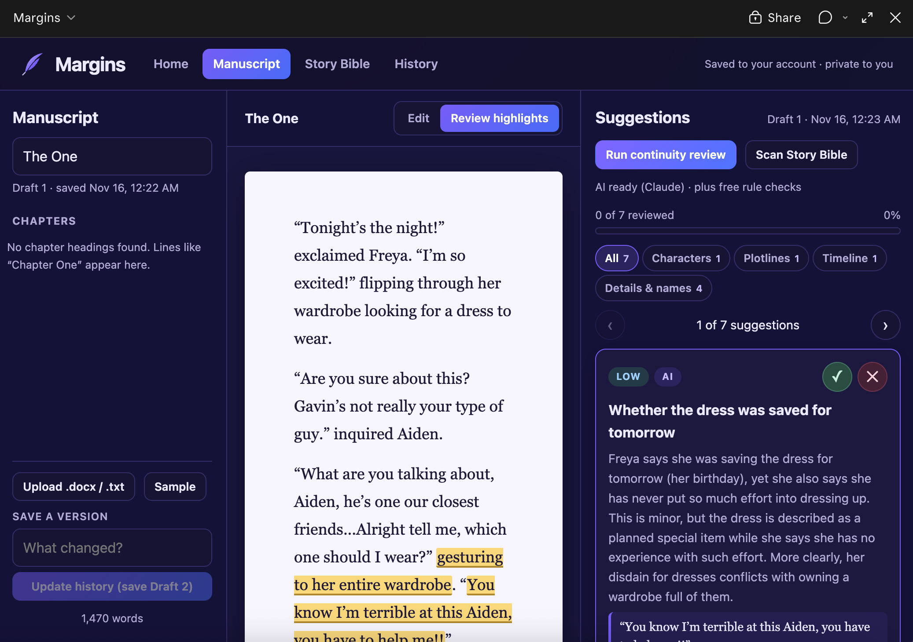
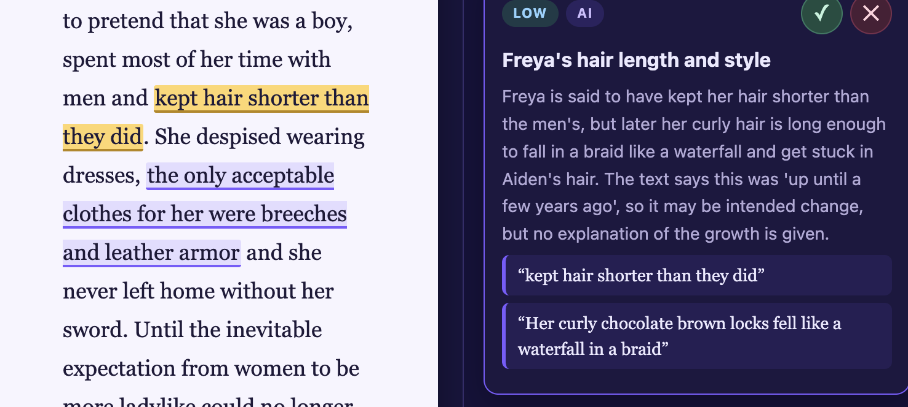
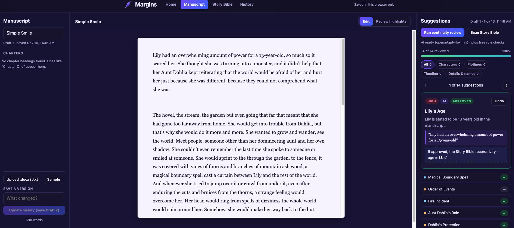

Margins
A manuscript-review assistant for emerging fiction authors, helping them spot possible inconsistencies before the next editing round.
Product Showcase (Prototype / Live App / 2-Min Video)
Current Status: Build 2 — working manuscript review app with a real AI call.
Authors add a manuscript, AI builds a Story Bible of characters and plotlines, and a continuity
review returns suggestions the author approves or dismisses.
Demo: Open the Margins app.
The AI review runs when the app is run locally (python3 server.py, with the OpenRouter key kept in a private .env file) and in the Claude-hosted version. This public GitHub Pages version runs the free rule checks only, because an API key can't be kept secret on a public page.
Build 2 Walkthrough
1. Home page and instructions
The author lands on the Margins home page. It explains the product in one sentence, highlights the four main features (Story Bible, version history, tabbed report, author approval), and gives a short "How Margins works" guide. The author can start with their own manuscript or try a sample.

2. Running a continuity review on a real excerpt
The author saved their excerpt ("The One", 1,470 words) as Draft 1 and selected Run continuity review. The workspace shows the chapter list and version controls on the left, the manuscript in the middle with possible issues highlighted, and the Suggestions panel on the right. Suggestions are grouped into tabs (Characters, Plotlines, Timeline, Details & names), and the author steps through them one at a time ("1 of 7 suggestions"), approving with ✓ or dismissing with ✕.

3. An AI suggestion with quoted evidence
A suggestion labelled AI flags a possible continuity issue: Freya is described as keeping her hair shorter than the men's, but later has long curly hair in a braid. The AI quotes the exact words from the manuscript, and those words are highlighted in the text. It also notes the change may be intentional, so the author decides. Margins never rewrites the author's text.

4. The same review running locally with a real API call
Margins running on my laptop at localhost:8000 with python3 server.py. The panel shows
"AI ready (openai/gpt-4o-mini)": the local server sends the excerpt to OpenRouter using the key stored in
.env, which is never uploaded to GitHub. The review of a 580-word excerpt ("Simple Smile")
returned 14 suggestions; I approved "Lily's Age", which recorded Lily's age (13) in the Story Bible.
The server logged the real cost of the call: 968 input + 1,192 output tokens, $0.00086, 15 seconds.

Build 1 Prototype Walkthrough
The original Build 1 prototype, kept for reference: a rule-based checker that ran locally and found one predefined contradiction.
Step 1: Enter a manuscript excerpt
The author begins with an empty manuscript field and can paste their own text or load a sample excerpt.

Step 2: Load the example and review
The author loads a sample passage containing a deliberate continuity inconsistency and selects Review Manuscript.

Step 3: Examine the review findings
Margins identifies a potential contradiction about the character's previous visit to London and provides supporting evidence for the author's review.

Living PRD (Product Requirements Document)
1. Target User & The Job to Be Done
Who is this for? An emerging or self-publishing fiction author preparing a manuscript for editing. A potential early feedback contact is an author I previously supported during a book launch internship; feedback has not yet been collected.
The painful "Before" workflow: Authors reread drafts and use repeated proofreading and editing rounds to catch mechanical errors and story inconsistencies. Important issues may remain after multiple passes, diverting attention from creative development.
The "After" workflow with this product: The author pastes an excerpt, receives clearly explained potential inconsistencies with supporting phrases, and decides what—if anything—to revise. The author retains editorial control.
2. Scope & Explicit Non-Goals
- In Scope (Core Workflow): Upload or paste a manuscript excerpt → save it as a draft → (optional) AI builds a Story Bible of characters and plotlines → run a continuity review → step through the suggestions by category and approve or dismiss each one, with the evidence highlighted in the text.
- Out of Scope #1: Automatically rewriting or replacing the author’s prose.
- Out of Scope #2: Whole-book, multi-chapter analysis.
- Out of Scope #3: Replacing human editors or providing publishing and marketing services.
3. How It Works Under the Hood & Riskiest Assumption (Week 2+)
Biggest Risk (PRD v2): The AI invents contradictions that aren't in the text, or flags so many minor or intentional choices (flashbacks, time passing) that authors stop trusting the suggestions.
How Build 2 tests it: Every AI suggestion must quote the exact words from the manuscript. Margins checks each quote against the text and drops any suggestion whose quote can't be found, then highlights the real words so the author can judge in context. AI suggestions sit beside free rule-based checks, and the author approves or dismisses each one, so I can see how many AI suggestions are useful versus noise. In the first real tests, a 1,470-word excerpt returned 7 suggestions and a 580-word excerpt returned 14. The AI suggestions quoted real passages, but some were not real contradictions (for example, "Lily's Age" only restated that Lily is 13). That confirms the risk: the next build needs a stricter prompt and a way to measure how many AI suggestions authors dismiss.
How the app works: The author pastes or uploads a manuscript (.docx or .txt) → saves it as a numbered draft → the app sends the text (and the author's Story Bible) to an AI model with instructions to return characters, plotlines or continuity issues as structured data with exact quotes → the app verifies the quotes, merges in rule-based checks, and shows a tabbed report → approving a suggestion can update the Story Bible, and every draft and Story Bible change is kept in a version history. Run locally, the app talks to a small Python server (server.py) on the author's computer, which reads the OpenRouter API key from a private .env file and calls openai/gpt-4o-mini; the key never reaches the browser or GitHub. The Claude-hosted version uses Claude instead and saves each author's work privately to their account. The GitHub Pages version runs the rule checks only, because an AI key can't be kept secret on a public web page.
4. Unit Economics & Analytics Snapshot (Updated Weekly)
Weekly Build Log
Build 1 · Intent.md & Throwaway Prototype (Due Nov 9)
- What shipped: Built a working browser-based prototype that identifies a predefined continuity inconsistency in a manuscript excerpt. Published the Product Page with PRD v1 and a three-step screenshot walkthrough
- Things learned with AI: Learned how to use AI to develop a functional HTML prototype, manage a GitHub repository, publish a website using GitHub Pages, and troubleshoot code and formatting issues
- What broke / changed in PRD: Initially encountered issues when transferring HTML into GitHub and had to restore the correct formatting. Narrowed the first prototype to rule-based continuity checking rather than full AI-powered manuscript editing, while keeping the broader product vision for future builds
- Cost & time this week: Approximately 3-4 hours spent on planning, building, testing, and GitHub setup. Approx $20 in direct expenses for ChatGPT (paid subscription)
Build 2 · Smallest Local Version & PostHog (Due Nov 16)
- What shipped: Rebuilt Margins as a working app with a real AI call: AI builds a Story Bible of characters and plotlines from the manuscript; a continuity review combines AI suggestions with rule-based checks; a tabbed Suggestions panel lets the author approve or dismiss each suggestion with the evidence highlighted in the text; version history saves each draft and Story Bible change with compare and restore. Published the app at /app, installed PostHog on this page and the app, and updated the PRD to v2.
- Things learned with AI: How an app sends text to an AI model and gets structured results back, why API keys can't go on a public page, how to make the AI quote its evidence so its suggestions can be checked, and how to add analytics with PostHog.
- What broke / changed in PRD: Uploading files to GitHub through the website was confusing (the upload page doesn't accept folders), so I created the folder first and uploaded the files into it. The PRD moved from a single rule-based check to an AI-assisted review with a Story Bible, version history and author approval. Running the AI locally needed Apple's command line developer tools installed before
python3would run, and the first local run printed errors from a small logging bug inserver.py(fixed). Some AI suggestions were noise, which is the biggest risk in the PRD. - Cost & time this week: About 5 hours. Existing ChatGPT and Claude subscriptions, plus $5 of OpenRouter credit (key capped at $2). Measured API cost: $0.00086 per AI review.
Build 3 · Build.exe: The Core Workflow (Due Nov 23)
- What shipped: [End-to-end workflow working with real inputs + PostHog funnel events]
- What broke / changed in PRD: To be recorded after testing
- Cost & time this week: Actual spend and hours to be entered by the builder
Build 4 · Test.py: Choose Track A or Track B (Due Nov 30)
- Chosen track: [A: 10-case domain eval and one outside target-user review; OR B: 3–5 outside users and replay findings]
- Results and improvements: [Before/after evidence; for Track B, fixes to the top three friction points]
- PRD v4 changes: [What the evidence changed]
- Cost & time this week: Actual spend and hours to be entered by the builder
Build 5 · Ship.installer: Launch Ops, Rollback Check & 2-Min Video (Due Dec 7)
- Launch Ops & Safety: [Verified no exposed keys, set spend cap, tested 2-minute rollback]
- 2-Minute Video & Final Polish: [Link/embed above]
- Cost & time this week: Actual spend and hours to be entered by the builder